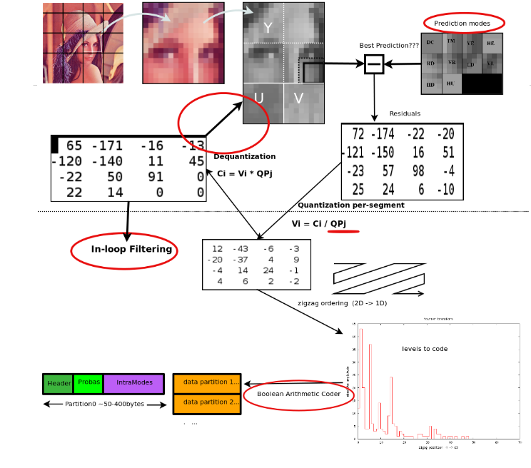

Image compression 101
Image formats
GIF
JPEG
No alpha channel
Lossy compression
PNG
Multiple variants
Lossless
PNG8
PNG24
Alpha Channel
SVG
CG, not photos
Markup based
Compare size vs. PNG
Not pixel perfect
WebP
Both lossy and lossless
Supports animation, alpha
Novelties

Poor cross-browser adoption
JPEG-XR
JPEG-XT
Compression methods
Lossless compression
Lossy compression
Finding the ideal format
Resizing!
Lossy recompression
Lossless recompression
Measure lossiness with SSIM
Tools
ImageMagick
MozJPEG
PNGQuant
imgmin
dssim
ImageOptim
Excercise time!!!
Flow